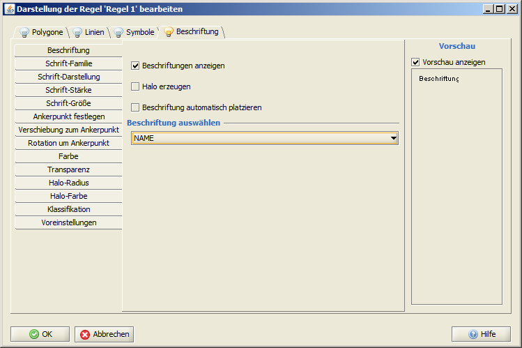

|
Mit Hilfe dieser Funktion, können Sie die Position (Rotation, Plazierung und die Ausrichtung an Liniensegmenten) einzelner Beschriftungen
individuell anpassen.
ACHTUNG: diese Funktion kann nur für Ebenen mit Punktgeometrien angewendet werden!
Vorraussetzungen
Bevor Sie beginnen können, müssen Sie über die Darstellungsbearbeitung folgende Einstellungen in der betreffenden
Ebene vornehmen:
- Selektieren Sie innerhalb der Ebenenansicht die gewünschte Ebene (mit der linken Maustaste anklicken) und wählen Sie aus dem Kontextmenü (mit der rechten Maustaste auf die gewählte Ebene klicken) den Eintrag
 Objekt-Darstellung bearbeiten Objekt-Darstellung bearbeiten
- Innerhalb des Startdialoges klicken Sie nun auf [Darstellungsbearbeitung öffnen]
wählen Sie dann den Reiter Beschriftung aus.
- Aktivieren Sie die Beschriftung, indem Sie das entsprechende Häkchen setzten und wählen Sie unter Beschriftung auswählen das entsprechende Attribut aus

- Sie müssen nun mindestens ein der folgenden Unterkategorien anpassen: "Verschiebung zum Ankerpunkt" oder "Rotation um Ankerpunkt".
Wählen Sie dort jeweils die Option attributabhängige Verschiebung bzw.
attributabhängige Rotation aus, indem Sie den entsprechenden Radiobutton aktivieren und dann das von Ihnen gewünschte Attribut auswählen.
ACHTUNG: Sie können nicht gleichzeitig dasselbe Attribut für Rotation und Verschiebung auswählen!
- Bestätigen und Übernehmen Sie die Änderungen und schließen Sie die Darstellungsbearbeitung.
|